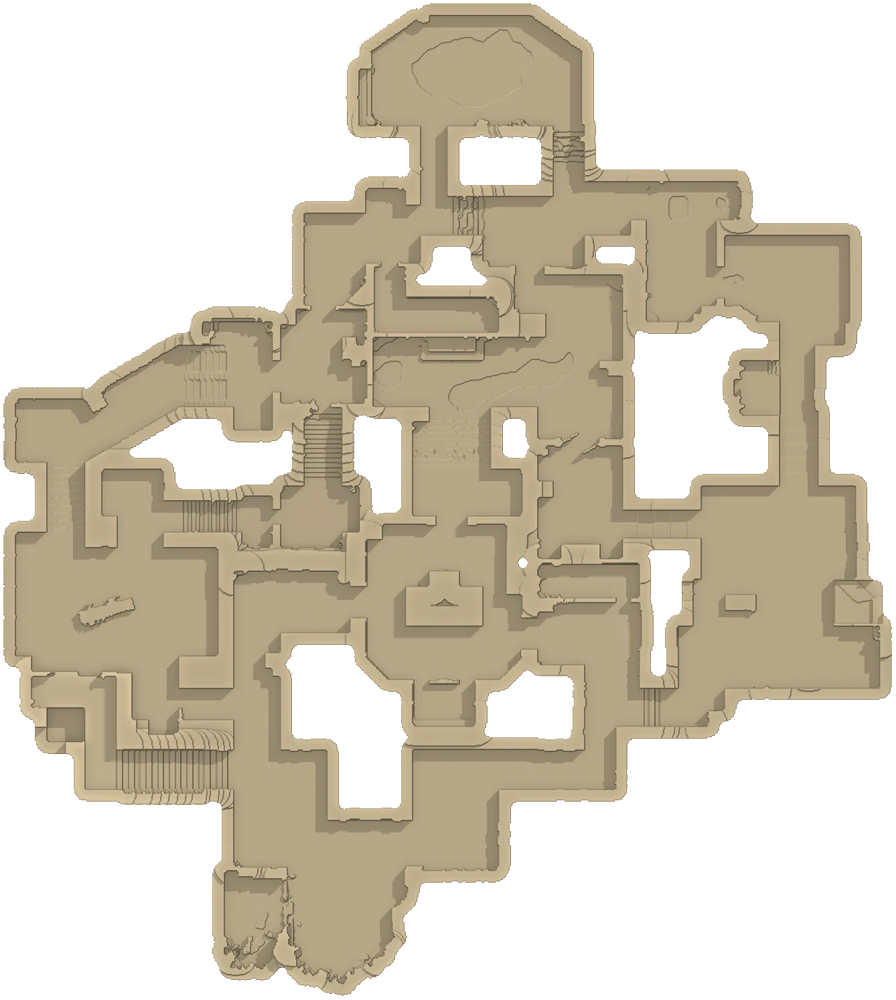
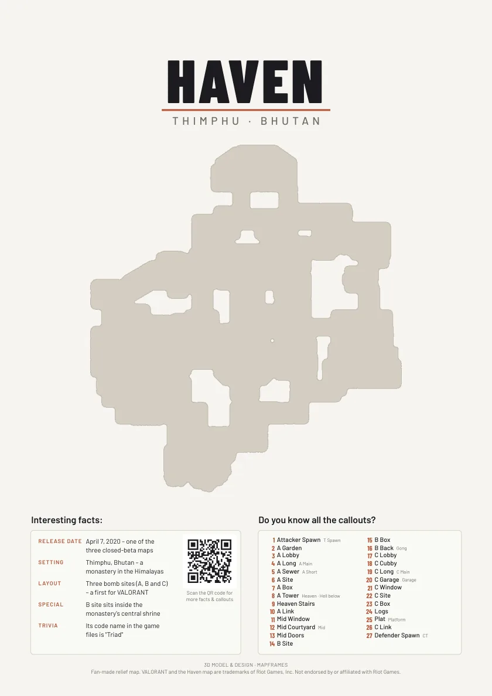

HAVEN
Thimphu, Bhutan
Every callout on your relief. Tap a marker for the name, the slang and a view from that spot, or test yourself.

Where is
What is in the frame
Six parts, from the front to the wall. Move the slider to take the frame apart, drag the picture to turn it, and pick a part to see what it does.


About Haven
- Release date
- April 7, 2020 – one of the three closed-beta maps
- Setting
- Thimphu, Bhutan – a monastery high in the Himalayas
- Layout
- Three bomb sites (A, B and C) – the first map with three
- Special
- B site sits inside the monastery's central shrine
- Trivia
- Its code name in the game files is “Triad”
All maps
 AbyssJan Mayen, Norway23 callouts
AbyssJan Mayen, Norway23 callouts AscentVenice, Italy68 callouts
AscentVenice, Italy68 callouts BindRabat, Morocco28 callouts
BindRabat, Morocco28 callouts BreezeBermuda Triangle, Atlantic23 callouts
BreezeBermuda Triangle, Atlantic23 callouts FractureNew Mexico, USA22 calloutsHavenThimphu, Bhutan29 callouts
FractureNew Mexico, USA22 calloutsHavenThimphu, Bhutan29 callouts IceboxBennett Island, Russia25 callouts
IceboxBennett Island, Russia25 callouts LotusWestern Ghats, India28 callouts
LotusWestern Ghats, India28 callouts PearlLisbon, Portugal26 callouts
PearlLisbon, Portugal26 callouts SplitTokyo, Japan24 callouts
SplitTokyo, Japan24 callouts SunsetLos Angeles, USA17 callouts
SunsetLos Angeles, USA17 callouts